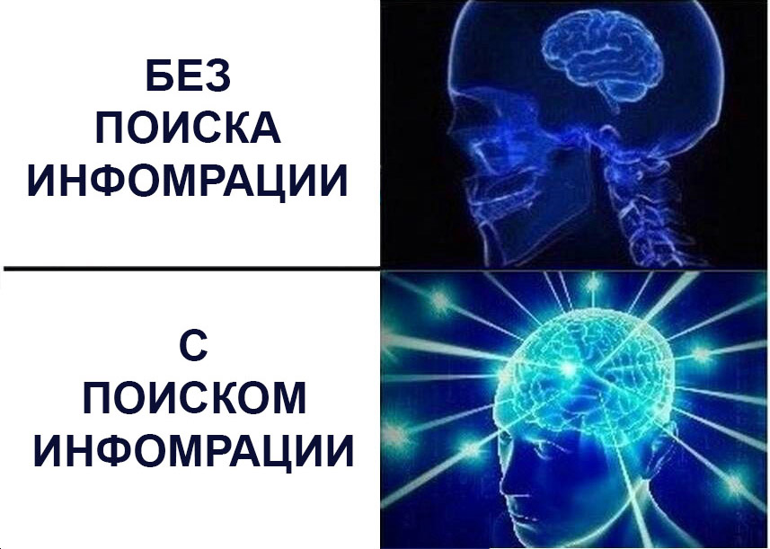
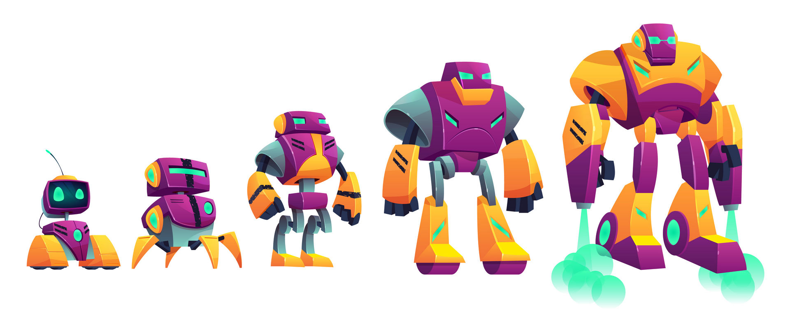
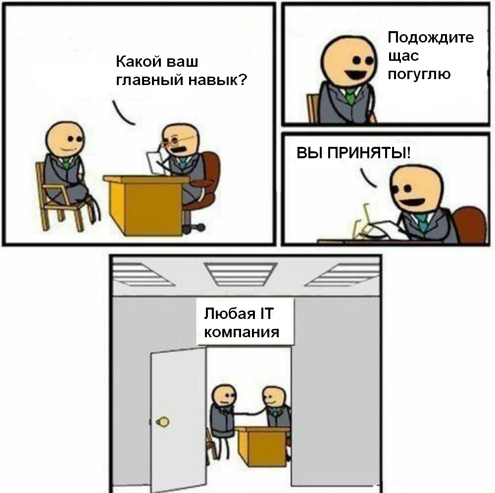
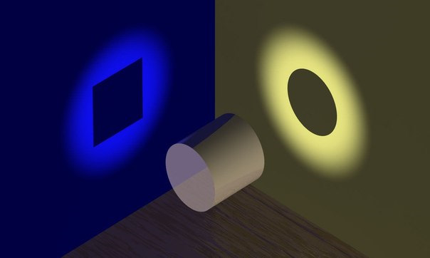

Как эффективно искать информацию
Автор Валерий Хаслер

Автор Валерий Хаслер
Обмен и поиск информации - основа Интернета. Без них нельзя представить работу в IT. Это верно и для образования.
А без самостоятельного поиска информации не может быть качественного обучения. Почему?
Информации слишком много
и она постоянно меняется.
Невозможно собрать в одном месте или голове всю информацию о какой-либо специальности.
Все люди разные.
В разработке всегда есть место разным точкам зрения и способам решения задач.
Поэтому нет ничего зазорного в том, чтобы искать ответы на вопросы. Более того это необходимо для любого развивающегося специалиста.
Как и любой другой навык этот можно прокачивать. Почему это важно?
Не вся информация одинаково полезна:) Качественный поиск - как фильтр. Он позволяет отсеивать ненужное и брать только полезное.
Быстрый поиск решения задачи поможет выделить себя на фоне множества других и на тестовом задании и на работе.
Чем быстрее вы ищите нужную информацию, тем больше вы экономите самый ценный ресурс – время.
Всегда эффективно посмотреть на задачу с разных точек зрения. Множество специалистов всегда найдут быстрее все проблемы и способы их решения.
Критически — не значит никому не верить. Это значит проверяйте всё на практике. А также сравнивайте разные источники.
Сайты могут пробиться в первые результаты выдачи за счет SEO или своего возраста.
Во фронтенде все очень быстро меняется. До 2014-2015 - скорее всего устаревшее.
Это очень условное разделение. Некоторые сайты могут попасть в разные категории. С одной стороны это субъективное мнение автора, но с другой оно основано на конкретных наблюдениях.
Хороша для поиска знаний, в которых особо нет места мнениям. Например, чтобы узнать, когда выходили разные версии языка.
Если нашли полезное, то добавляйте в закладки или RSS.
Многие сайты позволяют читать все обновления через спец. технологию - RSS. Она соберет для вас контент со всех сайтов в одном месте.
Бесплатные онлайн RSS ридеры:
Подписывайтесь на эту тему в тех соц. сетях, которыми вы активно пользуетесь.
Коллективный блог на разные темы. Есть хабы (рубрики) по фронтенду:
Тоже коллективный блог. Больше на английском, меньше комментов.
Самый популярный в мире коллективный блог. Можно найти сабреддиты на почти любые темы. Больше ссылок и обсуждений, чем статей.
А еще можно погуглить тему + "новости", чтобы найти сайты с новостями по этой теме. Например "frontend news".
На эти сайты вы часто можете попасть из поисковой выдачи.
На эти сайты вы часто можете попасть из поисковой выдачи.
Задавайте вопросы сами!
Не бойтесь сами задать вопрос на одном из созданных для этого сайтов! А также у преподавателей и коллег.
При этом задавать вопросы тоже можно эффективнее. Сообщайте всю необходимую информацию и формулируйте его так, чтобы избежать недопонимания. Помните, что люди не умеют читать мысли:)
Не сдавайтесь, если сразу не нашли ответ! Попробуйте изменить запрос. Задавайте уточняющие вопросы сами себе.
Больше материалов и больше актуальных. Но во фронтенде некоторые темы больше представлены по-русски (БЭМ, российские компании).
Вы можете добавить в браузер Firefox поисковые движки, чтобы сэкономить еще больше времени. Это работает не только для поисковиков, но и для разных сайтов, где есть поиск. Например, такие как mdn, википедия, викисловарь, гугл переводчик.
Поиск по сайту через гугл "запрос site:адрес сайта". Например "font-style site:https://en.bem.info". Но он будет искать слова отдельно. Чтобы он искал слова вместе воспользуйтесь одним из базовых приемов - оберните слова в кавычки "font-style".
В поисковиках можно использовать операторы - специальные символы, уточняющие запрос. Основные гугл операторы можно найти в официальной документации.
Кроме перечисленных там есть и другие. Например, знак "*" можно использовать как "wild card". То есть вместо звездочки может быть любое слово. Так, запрос в кавычках "мы * дом" может выдать "мы купили дом" и "мы видим дом".
Сохраняйте знания локально в базе знаний. Для ее создания можно использовать приложения с заметками, CMS или специальные программы. Можете попробовать Joplin и расширения (хром, firefox) для сохранения страниц.
Моя база знанийИспользуйте все эти принципы каждый день в учебе и работе. Всегда задавайте вопросы, ищите ответы, новые источники и ко всему относитесь критически.
Самое время задать вопросы
.jpg){kind=link}